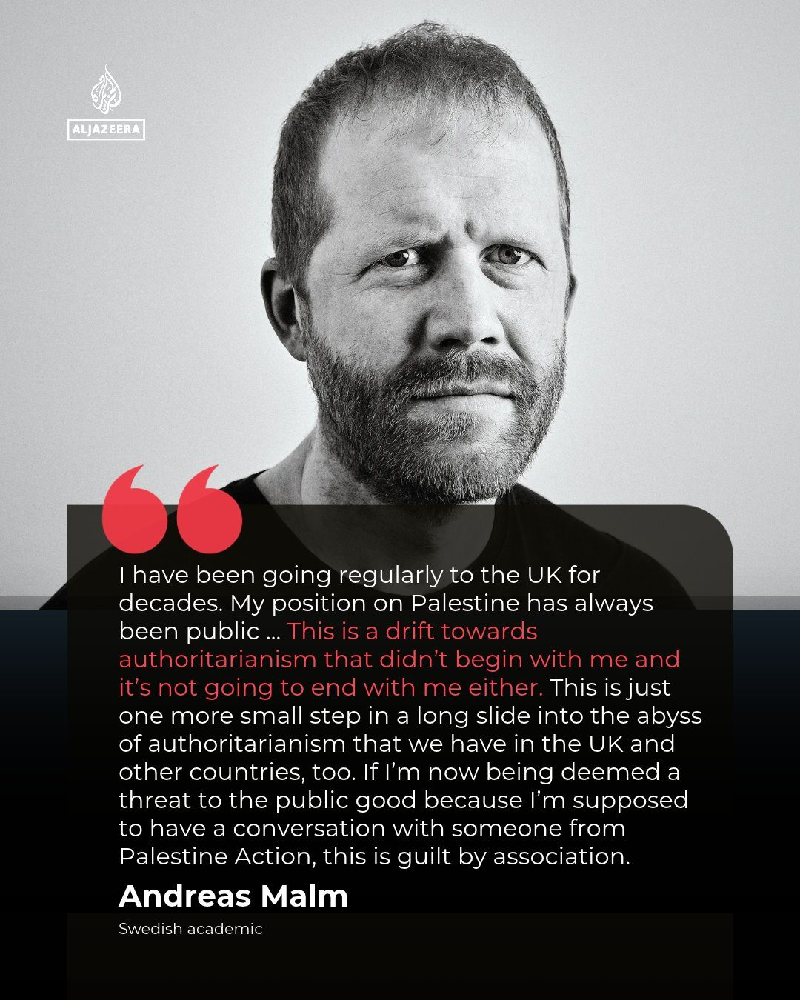

Sverige
Delvis obekräftatStorbritannien stänger gränsen för Andreas Malm – svenske klimatforskaren nekas inresa

Den svenske klimatforskaren och författaren Andreas Malm har nekats inresa i Storbritannien. Enligt brittiska myndigheter är hans närvaro "inte förenlig med allmänhetens bästa". Han skulle ha talat i London tillsammans med en av grundarna till den terrorstämplade gruppen Palestine Action.
Den svenske klimatforskaren och författaren Andreas Malm får inte resa in i Storbritannien. Brittiska myndigheter har dragit in hans resetillstånd med motiveringen att hans närvaro i landet "inte anses förenlig med allmänhetens bästa", en formulering som ger inrikesdepartementet stort utrymme att stänga ute personer utan att redovisa närmare skäl.
Malm, som är mest känd för boken "How to Blow Up a Pipeline" om klimatrörelsen och sabotage, skulle ha talat vid ett evenemang som tidskriften Tribune arrangerade i London. Där skulle han ha suttit i en panel tillsammans med Huda Ammori, en av grundarna till Palestine Action. Gruppen är förbjuden som terrororganisation i Storbritannien, och förbudet prövas just nu rättsligt.
"Skuld genom association"
Malm säger själv till Al Jazeera att han har rest regelbundet till Storbritannien i årtionden och att hans hållning i Palestinafrågan alltid har varit offentlig. "Om jag nu betraktas som ett hot mot allmänhetens bästa för att jag ska samtala med någon från Palestine Action, då är det skuld genom association", säger han. Han beskriver beslutet som ett steg i en glidning mot auktoritärt styre som varken började eller slutar med honom.
Hans förlag Verso Books fördömer beslutet. Förlagets ordförande, författaren Tariq Ali, kallar det "ett bedrövligt beslut", och enligt förlaget har något liknande inte hänt någon av dess författare under förlagets 55 år. Tribunes redaktör Oliver Eagleton skriver att politiker, akademiker, författare och konstnärer har fördömt beslutet. Bland dem som citeras finns författaren Sally Rooney, som enligt X:s egen nyhetssammanfattning ska ha kallat det en upprörande attack på en respekterad klimatexpert.
Kritik mot Labourregeringen
Kritiken riktas mot Labourregeringen. Journalisten Solomon Hughes på Private Eye skriver att Shabana Mahmood fattade beslutet på eget initiativ, utan att högern ens hade drivit någon kampanj, och varnar för att samma befogenheter kan användas av en framtida konservativ regering eller Reform. Den uppgiften har inte bekräftats av regeringen. Journalisten Adam Ramsay uppger att Malm också skulle ha medverkat i BBC Radio 4 och kallar beslutet ett extraordinärt angrepp på yttrandefriheten. Ekonomiprofessorn Julia Steinberger, verksam i Schweiz, uppmanar regeringen att riva upp beslutet omedelbart.
Alla är inte upprörda. Den svenska debattören Christina Spjut skriver att beslutet "inte är så konstigt", eftersom Malm länge har försvarat sabotage för det han ser som en god sak. Inrikesdepartementet har inte gett några skäl utöver standardformuleringen.
Så vet vi det
Källmix: 10 källor – 3 primärkälla, 1 expert, 1 analys, 3 journalist, 1 etablerad media, 1 debattör. Etablerad media utgör 1 av 10.
- Primärkälla Verso Books, Malms förlag, fördömer beslutet
- Primärkälla Tariq Ali, ordförande i Verso: förlagets uttalande
- Primärkälla Oliver Eagleton, redaktör för Tribune som arrangerade evenemanget
- Etablerad media Al Jazeera English: Malms egen kommentar
- Journalist Solomon Hughes (Private Eye): beslutet fattades utan påtryckningar från högern
- Journalist Adam Ramsay: Malm skulle även medverka i Radio 4
- Expert Prof. Julia Steinberger, ekologisk ekonom: uppmanar regeringen att riva upp beslutet
- Analys Noah Gordon, ECFR: "skandalös censur"
- Debattör Christina Spjut: "inte så konstigt" med tanke på Malms syn på sabotage
- Journalist Deeploomatic: sammanfattning med Guardian som källa
Att Malm nekats inresa och myndigheternas motivering bekräftas av Malm själv i en intervju med Al Jazeera, av hans förlag Verso och av tidskriften Tribune, som arrangerade evenemanget. Inrikesdepartementet har enligt uppgifter i flödet inte kommenterat beslutet närmare och inga skäl utöver standardformuleringen har redovisats. Att beslutet fattades av Shabana Mahmood personligen är en uppgift från journalisten Solomon Hughes och har inte bekräftats av regeringen. Uppgiften att Malm också skulle ha medverkat i BBC Radio 4 kommer från en enda källa.
Fördjupa
Frågorna öppnar Grok i en ny flik med artikeln som underlag. AI-svar kan innehålla fel, så kontrollera mot källorna.
- Vem är Andreas Malm och vad handlar boken "How to Blow Up a Pipeline" om? ↗
- Vad innebär det att Palestine Action har terrorstämplats i Storbritannien? ↗
- Hur fungerar regeln om att en persons närvaro inte är "conducive to the public good"? ↗
- Kan en EU-medborgare nekas inresa i Storbritannien efter brexit, och kan beslutet överklagas? ↗
- Har brittiska myndigheter tidigare stoppat akademiker eller författare på liknande grunder? ↗
Läs vidare
Uppdateringslogg
- 09:20 – Artikeln publicerad.